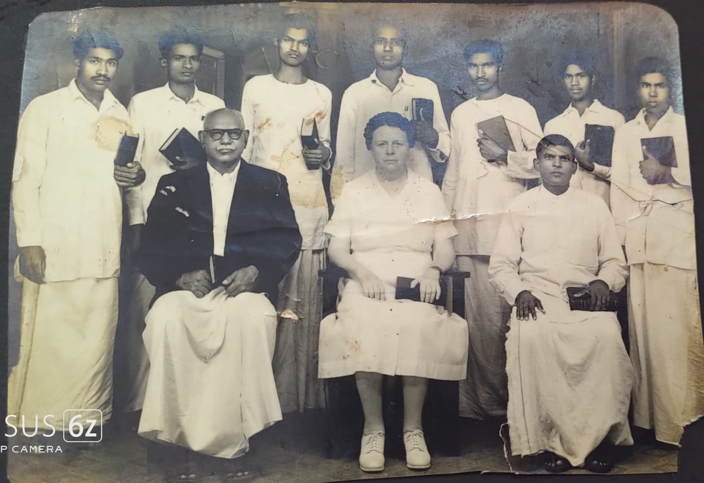

Testimony of Rev Kanagaraj david
About
[12/06, 8:11 pm] : கர்த்தருக்கு ஸ்தோத்திரம்!!
கிறிஸ்து வுக்குள் அன்பான தேவ பிள்ளைகளுக்கு இன்று முதல் என் சாட்சியை உங்களோடு பகிர்ந்து கொள்கிறேன்.1936ல் ஏப்ரல் மாதம் (15ம் தேதியில்) நாசரேத் கிராமத்தில் வகுத்தான்குப்பம் என்ற ஊரில் திரு ந வெள்ளகண் என்ற தம்பதியர் க்கு ஆறாவது மகனாகப் பிறந்தேன்.எங்கள் பெற்றோர் ஏழை விவசாயி,அப்பா இந்து பூஜாரி எனக்கு இரண்டு வயதாக இருக்கும் போது மரித்துபோனார்கள்.அவர்கள் மரிக்கும் முன் எங்கள் தாயாரிடம் நீ பிள்ளைகளையும் அழைத்து க்கொண்டு உங்கள் உறவினரோடு வேதத்தில் (கிறிஸ்தவர்களா) போஎன்று சொல்லி மரித்துப் போனார்.
தொடரும்----
[12/06, 8:11 pm] : கர்த்தருக்கு ஸ்தோத்திரம்!!
கிறிஸ்து வுக்குள் அன்பான தேவ பிள்ளைகளுக்கு இன்று முதல் என் சாட்சியை உங்களோடு பகிர்ந்து கொள்கிறேன்.1936ல் ஏப்ரல் மாதம் (15ம் தேதியில்) நாசரேத் கிராமத்தில் வகுத்தான்குப்பம் என்ற ஊரில் திரு ந வெள்ளகண் என்ற தம்பதியர் க்கு ஆறாவது மகனாகப் பிறந்தேன்.எங்கள் பெற்றோர் ஏழை விவசாயி,அப்பா இந்து பூஜாரி எனக்கு இரண்டு வயதாக இருக்கும் போது மரித்துபோனார்கள்.அவர்கள் மரிக்கும் முன் எங்கள் தாயாரிடம் நீ பிள்ளைகளையும் அழைத்து க்கொண்டு உங்கள் உறவினரோடு வேதத்தில் (கிறிஸ்தவர்களா) போஎன்று சொல்லி மரித்துப் போனார்.
தொடரும்----
[13/06, 6:24 am] : நேற்றைய தொடர்ச்சி
எங்கள் குடும்பமும், நாங்கள் பிரகாசபுரம் என்ற ஊரில் குடியேறியது.
எங்கள் தகப்பனார் மரித்துப் பின்னர் எங்கள் அம்மாவோட கூட பிரகாசபுரம் என்ற ஊரில் வந்து குடியேறினோம், எனக்கு ஐந்து அண்ணன்மார், மூத்தவர்கள் நாங்கள் இந்த ஊரின்C S I, ஆலயம் பக்கம் குடியிருந்தோம் எங்கள் வீட்டில் 🏡 தாவீது வைத்தியர்(பிரசங்கி யார் ) வந்து சந்தித்து போவார்கள் இவர்கள் மூலமாக 1941ம்ஆண்டு கனம் நீல் பிஷப் அவர்களால் பிரகாசபுரம் C S I ஆலயத்தில் தெளிப்பு ஞானஸ்நானம் பெற்று சபையில் சேர்ந்தோம்.அனைவர் பெயரும் மாற்றம் செய்யப்பட்டது.
அம்மா (பத்ரகாளி)ஞானபாக்கியம் மூத்த அண்ணன் (ராமசாமி)லாசர் 2(சிவலிங்கம்) ஜான்
3(குருசாமி) ஞானப்பிரகாசம்
4(சிவபெருமாள்) தேவதாஸ
5(இளையபெருமாள்) யோசேப்பு
6கனகராஜ் குடும்ப பெயராக, தாவீது ஐயா நினைவாக டேவிட் என்று சேர்த்து க்கொண்டோம்.
தொடரும்----
[14/06, 6:32 am] : 13/6/23,ன் தொடர்ச்சி
சிறுவயதில் கடந்து வந்த பாதை. எங்கள் தாயாருடன் நாங்கள் ஆறு பேரும் வாழ் ந்துவந்த நிலையில் எனது ஐந்தாவது வயதில் பள்ளி யில் படிக்க தொடங்கி நான்காவது வகுப்பு வரை மட்டுமே படித்த நான் வீட்டில் வறுமை யினால் சிரிய கடைகளில் மாதம் இரண்டு ரூபாய் சம்பளம் வாங்கி அம்மாவுக்கு கொடுப்பேன் அதை விடுத்து கொத்தனார் கையாளாக வேலைக்கு போய் தின கூலியாக 75 காசுகள் (12,அனா) வாங்கி அம்மாவுக்கு கொடுப்பேன் இப்படி படிக்க போகாமல் விளையாட்டு பிள்ளையாக வளர்ந்தேன் ஆனால் எங்கள் அம்மாவின் கண்டிப்பினால் ஒழுங்காக ஆலயம் செல்வதும் ஞாயிறு பள்ளி போய் வந்தேன் இதனால் சிறுவயதில் கர்த்தருக்கு பயப்படும் நிலையில் வளர்ந்தேன்.ஆனாலும் அதிகமாக சேட்டை கீழ்படியாமை போன்ற விளையாட்டுகள் என்னில் காணப் பட்டது ஆனாலும் நான் இளைய மகன் ஆனபடியால் அன்புடன் செல்ல மாக வளர்ந்து வந்தார்கள்.
தொடரும்----
[15/06, 7:52 pm] : இன்று காலை பிரயாணத்தில் இருந்ததால் சாட்சி யைவெளியிட தாமதத்திற்கு வருந்துகிறேன்.
14/6/23ன் தொடர்ச்சி
சிறுவனாக இருந்த நான் அம்மா வுக்கு அடங்காத வனாக வாழ்ந்தக் காலங்கள்.
கடைகளில் வேலை செய்யும் நாட்களில் ஒரு ஆங்கில மருந்து கடையில் வேலை செய்யும் போது அங்கு வேலை செய்யும் ஒருவர் என்னைத் திட்டியதால் கடையிலிருந்து வீட்டில் 🏡 வராமல் தூத்துக்குடி க்குஓடிப்போய் அங்கு ஒருவரிடம் வேலை கேட்டுவேலை கிடைத்தது அவர்களிடம் சில நாட்கள் கழித்து அவரிடம் சொல்லாமல் ஊருக்கு அம்மாவிடம் வந்து சேர்ந்து கொண்டேன் இப்படி யாக இருந்த நான் மறுபடியும் வீட்டைவிட்டு வெளியேறி திருநெல்வேலி வந்து ஒருவரிடம் வேலை மில் சேர்த்து அவர்கள் என்னை மாந்தோப்பு காவல் வேலைக்கு வைத்துக் கொண்டார்கள் ஆனால் அங்கேயும் சண்டை போட்டு இங்கிருந்து தச்சநல்லூரில் திரு மாடசாமி தேவர் என்பவர் களிடம் வேலைக்கு சேர்ந்த நான் ஒன்பது மாதங்கள் அவர்களுடைய வீட்டில் இருந்து விட்டேன் இதனால் எங்கள் அம்மா அண்ணன்மார் மூலம் தேடியும் கிடைக்காத நிலையில் அம்மா வியாதி படுக்கையில் ஆகிய நிலையில் நான் கேட்டுக் குமாரனைப் போல் மனந்திரும்பி அம்மா விடம்போக நான் இருந்த வீட்டாரிடம் சொல்லாமல் புறப்பட்டு நெல்லை யிலிருந்து கால்நடை யாக கருங்குளம் என்ற ஊரில் எங்கள் பெரியம்மா மகள் அக்கா வீட்டில் வந்து சேர்ந்தேன் ----
தொடரும்_ _ _
[16/06, 6:09 am] : என் தேவனுக்கு ஸ்தோத்திரம்
15/6/23ன் தொடர்ச்சி
எங்கள் தாயாருடைய மரணபடுகைக்கு காரனமனவன்
எங்கள் அக்கா வீட்டில் 🏡 வந்து அக்கா என்னை ப்பார்த்ததும் மிகவும் சந்தோஷமாக என்னை அன்புடன் ஏற்றுக் கொண்டார் கள்ஆனாலும் எங்கள் அம்மா நிலையை எண்ணி அவர்கள் தம்பியிடம் என்னை ஒப்படைத்து தம்பியை உடனே சித்தியிடம் கொண்டு போ என்று என்னை ஒப்படைத்து அனுப்பி வைத்தார் கள்அந்த அண்ணன் எங்கள் ஊருக்கு வந்து எங்கள் அம்மா விடம் சேர்த்தார்கள்.
எங்கள் அம்மாஎன்னை கண்டதும் எழுந்து என்னை அன்புடன் ஏற்றுக் கொண்டு அனைத்து அழுதார்கள் அதன் பின்னர் அம்மா சற்று குணமாகி இருந்து மூன்றாவது அண்ணன் நிமித்தம்,கவலைகளால் பாரமடைந்து மீண்டும் வியாதிப்பட்டு படுக்கை யிலாகிவிட்டார்கள் நான் அம்மா வுடன் இருந்து அம்மா சுகத்துக்காக எங்கள் ஊரில் ஜெபமணி என்ற அம்மாவிடம்.அவர்களிடம் தினமும் ஒரு சொம்பு தண்ணீர் ஜெபித்து வாங்கி வந்து அம்மா வுக்குக் கொடுத்து வந்தநிலையில் அம்மா கர்த்தருக்குள் நித்திரை அடைந்தார்கள்.-----
தொடரும்
[17/06, 8:36 am] கர்த்தருக்கு ஸ்தோத்திரம்
16/6/23ன் தொடர்ச்சி
எங்கள் அம்மாவின் மறைவும் எனது வாழ்க்கை பயணமும்
எங்கள் அம்மாவின் மரணத்திற்கு பின் என் நான்காவது அண்ணன் தேவதாஸ் மரணம் அடைந்தார்கள் அண்ணன் மார்களுடன் வாழ்ந்து வந்தேன் எங்கள் பெரிய அண்ணன் என்னை படிக்க வைக்க விரும்பினார் கள் அதை நான் ஏற்றுக்கொள்ள முடியாத நிலை யில் அண்ணன் மார்களை விட்டு வெளியேறி திருநெல்வேலி மற்றும் மதுரை வந்து கூலி தூக்கி சில காலம் கடைவீதி, ஃபிளாட் பாரங்களில் காலம் களித்தேன் எப்படி யோ ஹோட்டல் வேலை கிடைத்தது அதில் கிடைக்கும் பணத்தை மனம் போல் செலவுகள் செய்து சினிமா, சிகரெட் புகை பிடித்தல் போன்றவற்றில் ஈடுபாடு கொண்டு வாழ்ந்து வந்தேன். இப்படி யாக திருச்சி இங்கும் அதேவேலைகளை செய்து வாழ்ந்தேன் சினிமாவில் மோகம் கொண்டு சென்னைக்கு வந்து இங்குள்ள ஹோட்டல்களில் வேலை பார்த்து வந்தேன் இப்படி யாக துன்மார்கனாக ஜீவித்தேன்----
தொடரும்
[18/06, 4:51 am] : தேவனுக்கு மகிமையுண்டாகட்டும்.
17/6/23ன் தொடரச்சி
இந்துவாக மாத ம் மாறி ஜீவித்த காலங்கள். மதுரை மில் இருந்த நாட்களில் எனக்குள்ளே ஒரு எண்ணம் இந்துவாக தானே பிறந்த நான் ஏன் கிறிஸ்தவனாக வாழ வேண்டும் என்று எண்ணங்கொண்டுமதுரை மீனாட்சி அம்மன் கோவிலில் சென்று நெற்றியில் விபூதி பூசி பொட்டு வைத்து இந்துவாக மாறினேன் ஆனால் ஊரில் அண்ணாச்சிக்கு தெரியாமல் இதை செய்தேன் என் தகப்பனார் சொத்தை மீட்க வேண்டுமானால் இந்துவாக மாறினால் மட்டுமே முடியும் என்று மாறினேன் காரணம் எங்கள் பெரியப்பா மகன் ராமசாமி என்பவர் என்னிடம் சொல்லி யிருந்தார் நீ வந்து நாராயணன் சாமி கோவிலில் தீபம் ஏற்றி இந்த தெய்வத்தை வழிபட்டால் உங்கள் தகப்பனார் சொத்தை எழுதி தந்து விடுகிறேன் என்று சொல்லி ய படியால் இப்படி மாறினாலும் ஊருக்கு வரும்போது அண்ணனுக்கு பயந்து ஆலயம் செல்வதும் ஞாயிறு மற்றும் நாள்களில் சுவிசேஷ பிரசங்கங்களில் பங்கெடுத்து ஊரில் வரும் போது இப்படி நடந்து இரு வேடங்களில் ஜீவித்தேன் ஊரில் கிறிஸ்தவன் சென்னை யில் இந்துவாக ஜீவித்தேன்----
தொடரும்
[19/06, 4:54 am] : கர்த்தர் நல்லவர் அவர் கிருபை என்றுமுள்ளது
18/6/23ன் தொடர்ச்சி
பரதேசி யாக அலைந்த காலங்கள்
சென்னை வந்த நான் சினிமாவில் வைத்தியம் பிடித்தவனாக அலைந்தேன் ஒரு சினிமாவில் ஜுஸ் பில்டிங் என்று ஒன்றை பார்த்த நான் அதைப் பார்க்க பாம்பே பிரயாணம் செய்து பூனே வரை வந்தேன் பூனே மில் ஹோட்டல் வேலைக்கு அலைந்து கிடைக்காத நிலையில் ராணுவத்தில் சேர முயற்ச்சி பண்ணி அதுவும் கிடையாமல் இரத்த தானம் செய்து அதில் கிடைத்த பணம் செலவானது இங்கு ஒருவர் நன்பனாக கிடைத்தான் அவனும் நானுமாக சாலை வழியாக சாலையோர நாவல் மரத்தின் பழங்களை பொருக்கி தின்னு 111மைல் கால்நடை யாக பாம்பே குர்லா என்ற ஊரில் வந்து 😉கால் வலியால் ரோட்டு ஓரம் உட்கார்ந்து சற்று இலைப்பாறிய போது!!! தொடரும்
[20/06, 4:43 am] : கர்த்தருக்கே மகிமை
19/6/23ன் தொடர்ச்சி
இரண்டு போலீஸார் எங்களை பிடித்தார்கள் ஏன் என்றால் சந்தேகத்தின் பேரில் போலீசார் பிடித்து எங்களை அங்குள்ள சிறையில் அடைத்தனர் அங்கிருந்த ஒருவர் தமிழர் அவர் கூறினார் உன்மையான பெயர் முகவரி யை சொன்னால் நல்லது என்று சொன்னதின் பேரில் என்னை விசாரணை நடத்தி யபோது என்னுடைய பெயர் முகவரியைத் தெளிவாக சொன்னேன் எங்களை தற்கால சிறையில் அடைத்தனர் இங்கு மூன்று வேளை உணவு வெளியே உள்ள ஒருவர் கொண்டு தருவார் எனக்கு என்ன செய்வது என்று தெரியாமல் குற்றம் ஒன்றும் செய்யாமல் இப்படி அடைப் பட்டுகிடக்கிரேனே என்று சொல்லி ஆண்டவரிடம் விடுதலை க்காக ஜெபித்து பார்க்கலாம் என்று சிறையில் உள்ள சுவரில் இயேசு அறையப் பட்டதான அந்த காட்சியை வரைந்தேன்----
தொடரும்
[21/06, 5:31 am] : கர்த்தாவே நீர் மகிமை படுவீராக
20/6/23ன் தொடர்ச்சி
சிறையில் இருந்த நாட்கள்.
அந்த சிறையில் இருந்த பலரும் தாங்கள் வழிபடும் தெய்வத்தை வரைந்து வைத்த நிலையில் நானும் சிலுவையில் அறையப்பட்ட இயேசுவின் உருவத்தை வரைந்து அந்த சிறையில் நான் இந்துவாக இருந்த போதிலும் 5வயது முதல் 14 வயதுவரை அம்மா மூலம் நற்ப்போதனை பெற்றிருந்த படியால் சிறையிலேயே மூன்று நாட்கள் உபவாசம் எடுத்து காலை மாலை சாப்பிடாமல் மூன்று வேளையும் இருப்பேன் ஆனால் சிகரெட் பிடிக்கும் பழக்கம் விடாமல் அந்த நான் வரைந்த படத்தில் சிலுவை க்கு பாதத்தில் மெலுகு கொண்டு வர கேட்டு அதை அதில் வைத்து அதில் ஊதுபத்தி கொளுத்தி மெழுகு வர்த்தி மும் கொளுத்தி காலையும் மாலையும் ஆண்டவரே சிறையில் இருக்கும் படியான எந்த குற்றமும்நான் செய்யவில்லை ஆகையால் என்னை விடுவிக்க வேண்டும்
அப்படி விடுதலை பெற்றால் நான் தமிழ் நாடு போய்விடுவேன் என்று வேண்டிக் கொண்டேன்----
தொடரும்
[22/06, 5:10 am] : கர்த்தருக்கே மகிமை
20/6/23ன் தொடர்ச்சி
சிறையிலிருந்து விடுதலை சென்னை பிரயாணம்.
ஜெபித்தேன் சிறையிலிருந்து அழைத்துச் சென்று நீதிமன்றத்தில் ஆஜர் படுத்தினார்கள் விசாரணை மில் குற்றமற்றவர் என என்னை விடுதலை செய்தார்கள்.நான் வெளியே வந்த எனக்கு பாஷைத் தெரியாமல் அங்கு வேலை தேட வேண்டும் என்று விரும்பாத நான் தமிழ் நாட்டில் சென்னை நோக்கி பயணம் செய்து சென்னை யில் வந்து ஹோட்டல் வேலைக்கு சேர்ந்து பல இடங்களில் வேலைகள் செய்து சென்னை புரசைவாக்கம் வந்து இங்குள்ள ஹோட்டல் ஒன்றில் வேலை செய்யும் நாட்களில் சினிமாவில் நடிக்க ஆசை ப்பட்டு கீழ்பாக்கம் நியூட்டன் ஸ்டூடியோவில் ஒரு மேக்கப் மேன் ஒருவரை அனுகி பழகினேன்----
தொடரும்
[22/06, 8:39 pm] : தவறு க்கு மன்னிக்கவும் இன்று வெளியிட்டுள்ள சாட்சி தொகுப்பில் 21/6/23, என்று எழுதாமல் (20/6/23என்று) எழுதி யதற்க்கு வருந்துகிறேன்.
[22/06, 8:39 pm] : கர்த்தருக்கே எந்நாளும் மகிமை உண்டாவதாக.
22/6/23ன் தொடர்ச்சி
அந்த மேக்கப் மேனோடு பழகியதால் அவர் மூலம் ஸ்டியோ வகுக்குள் பிரவேசித்து அங்கு நடைபெறும் நிகழ்ச்சிகள் யாவையும் பார்க்க சந்தர்ப்பம் வாய்த்தது.
அதில் நடனக் காட்சி மற்றும் நடிகர் கள் நடிக்கும்காட்ச்சி கண்டுமகிழ்ச்சி அடைய செய்தது.இது போல் நானும் துணை நடிகராக நடிக்கவும் பிரயாசம் எடுத்து வந்த நாட்களில் அதற்க்காக அதிகம் பணம் செலவுகள் செய்து முழுமையாக அதற்கு நேரத்தை யும் செலவு செய்து வந்தேன்.இந்தநாட்களில் என்னை க்கேள்வி கேட்டுக் கண்டிக்க அண்ணன் மார்கள் யாரும் என் அருகில் இல்லாதபோது நான் மனம்போன போக்கில் ஜீவித்துக் கொண்டிருந்தேன்----
[23/06, 8:57 pm] : கர்த்தர் நாமம் மகிமை பட்டும்
22/6/23ன் தொடர்ச்சி
அன்பார்ந்த தேவ பிள்ளைகளே அடிமையின் சாட்சிகளை ஆவலோடு எதிர்பார்க்கும் உங்கள் அனைவருக்கும் என் மனமார்ந்த நன்றிகள்.
இப்படியாக வாழ்ந்த காலத்தில் இந்து தெய்வத்தை வணங்கி வழிபட்டும் ஊருக்கு போனால் மட்டுமே அண்ணாச்சிக்கு பயந்து ஆலயத்துக்கு போவேன் இந்த நிலையில் இரண்டும் கெட்ட நிலையில் வாழ்ந்து வந்து கொண்டிருந்த போது 1956ம் ஆண்டு டிசம்பர் மாதம் பிறந்த நாளில் எனக்குள்ளே ஒரு எண்ணம் கொண்ட நான் சினிமாவில் பைத்தியம் கொண்டு அலைந்த படியால் கிறிஸ்துமஸ் பண்டிகை க்குபுதிய சினிமா படம் வெளியாகும் அந்த படங்களை பார்க்க ஆசை ப்பட்டு நான் வேலை செய்த ஹோட்டல் மேனேஜரிடம் கிறிஸ்துமஸ் லீவு கேட்டேன் அப்போது மேனேஜர் நீ இந்து என்று தானே சொன்ன இப்போது கிறிஸ்துமஸ் லீவுகேட்கிறாயே என்றார்கள்----
தொடரும்
[24/06, 8:09 pm] : அன்பு தேவ பிள்ளைகளுக்கு இயேசுவின் நாமத்தில் வாழ்த்துக்கள்.🙏
23/6/23ன் தொடர்ச்சி
ஐயா நான் இந்து என்று சொல்லி கூறியதும் உன்மைதான் ஆனால் ஊரில் என் குடும்பத்தில் யாவரும் கிறிஸ்தவர்கள் நான் மட்டும் இங்கு இந்துவாக மாறிவாழ்ந்து வந்தேன் இந்த வருடம் அண்ணன் மார்கள் போல் நானும் ஆலயம் சென்று வரவிரும்புவதால் தயவாக டிசம்பர் 25ம் தேதியில் விடுப்பு தாருங்கள் எனக் கேட்டேன் மேனேஜர் சரியென கூறினார் கள் இதனால் புதிய துணிகள் எடுத்து ஆயத்த ப்பட்டேன்.இந்தஹோட்டலில் என்னோட வேலை பார்த்த அனைவரும் இந்துக்கள் ஆகையால் எனக்கு லீவுக்கு ஒரு தடையும் இல்லாமல் லீவு கிடைத்தது எனக்குள்ளே பெரும் மகிழ்ச்சி அடைந்தேன்----
தொடரும்
[26/06, 5:51 am] : பிரியமான தேவ பிள்ளைகளே எல்லா கனமும் மகிமையும்
நமது கர்த்தராகிய இயேசு வுக்கே உண்டாகட்டும்
25/6/23ன் தொடர்ச்சி
எதற்காக இந்த மகிழ்ச்சி கிறிஸ்துமஸ் க்கு ஆலயமும் போகலாம்
சினிமாவும் இரண்டு ஷோ பார்க்கலாம் என்ற சந்தோஷந்தான்.
கர்த்தரின் அசரீ ரீ சத்தம் கேட்டு மனம் திரும்பும் அனுபவம்.
இப்படியாக மகிழ்ச்சி அடைந்து அதற்கு ஆயத்த பட்டபோது யாரும் பக்கம் இல்லை திடீரென ஒரு சத்தம் அச ரீ ரீயாக நீ கிறிஸ்தவனானால்
கிறிஸ்துமஸ் கொண்டாடு என்ற சொல், நான் பதட்டமும் பயமும் அடைந்தேன் ஏனெனில் நான் வேலை பார்த்த ஹோட்டலில் யாரும் கிறிஸ்தவர்கள் இல்லை இப்படி இருக்க இந்த வார்த்தை யார் சொல்ல கூடும் என்று சொல்லி எனக்குள்ளே ஒரு தீர்மானம் பண்ணினேன் என்னவென்றால் மெய்யான தெய்வம் யார் என்று தெரிந்து கொள்ளாமல் எந்த தெய்வத்தையும் வணங்கவும், எந்த ஆலயத்துக்கும் போகவுங்கூடாது என்று சொல்லி தீர்மானத்தோடு----
தொடரும்
[27/06, 7:37 am] : தேவாதி தேவன் மகிமை படுவாராக
26/6/23ன் தொடர்ச்சி
நோம்பு இருந்ததும் தேவன் என்னோட பேசி என்னை இரட்சித்ததும்
இந்துக்களைப் போல் எங்கள் தகப்பனார் 21நாள்கள் நோம்பு இருப்பதை அம்மா மூலம் கேள்வி பட்டிருந்தது ஞாபகம் நானும் அப்படியே காலை 4 மணிக்கு எழுந்து ஸ்நானம் செய்து அந்த ஈரவஸ்திரத்தோடு சாஷ்டாங்கமாக விழுந்து வணங்கி வழிபட்டும் (திருமூலர் கூறியபடி
ஒன்றே குலம் ஒருவனே தேவன் )என்ற வார்த்தை படி அந்த ஒரு தெய்வம் யார் என்று தெரிந்து கொள்ள வேண்டி நின்றேன் நேடிந்தான் கிடையாக விழுந்து வணங்கி காலையும் இரவும் இரண்டு வேளை யும் இந்துக்களைப் போல் வழிப்பட்டு ஆகாரம் மூன்று வேளையும் புஷியாமல் காஃபி மாத்திரமே குடித்து நோம்பை ஒழுங்காக கடைபிடித்து வந்தேன் இப்படி செய்து பதினான்காவது நாள் இரவு நான் சாஷ்டாங்கமாக விழுந்து வணங்கி யபோது ஒரு சத்தம் அச ரீ ரீ யாக ''நானே மெய்யான (தெய்வம்) கிறிஸ்து உன் பாவங்களுக்காக மரித்தேன் உயிருடன் எழுந்தேன் உன் பாவங்களை மன்னித்தேன் எழுந்திரு என்பதாக அந்த சத்தம் கேட்டது அதன்பிறகு முழங்கால் படியிட்டு ஜெபித்து இயேசுவை சொந்த இரட்சகராக ஏற்றுக் கொண்டேன்----
தொடரும்
[27/06, 8:20 am] : தேவாதி தேவன் மகிமை படுவாராக
26/6/23ன் தொடர்ச்சி
நோம்பு இருந்ததும் தேவன் என்னோட பேசி என்னை இரட்சித்ததும்
இந்துக்களைப் போல் எங்கள் தகப்பனார் 21நாள்கள் நோம்பு இருப்பதை அம்மா மூலம் கேள்வி பட்டிருந்தது ஞாபகம் நானும் அப்படியே காலை 4 மணிக்கு எழுந்து ஸ்நானம் செய்து அந்த ஈரவஸ்திரத்தோடு சாஷ்டாங்கமாக விழுந்து வணங்கி வழிபட்டும் (திருமூலர் கூறியபடி
ஒன்றே குலம் ஒருவனே தேவன் )என்ற வார்த்தை படி அந்த ஒரு தெய்வம் யார் என்று தெரிந்து கொள்ள வேண்டி நின்றேன் நேடிந்தான் கிடையாக விழுந்து வணங்கி காலையும் இரவும் இரண்டு வேளை யும் இந்துக்களைப் போல் வழிப்பட்டு ஆகாரம் மூன்று வேளையும் புஷியாமல் காஃபி மாத்திரமே குடித்து நோம்பை ஒழுங்காக கடைபிடித்து வந்தேன் இப்படி செய்து பதினான்காவது நாள் இரவு நான் சாஷ்டாங்கமாக விழுந்து வணங்கி யபோது ஒரு சத்தம் அச ரீ ரீ யாக ''நானே மெய்யான (தெய்வம்) கிறிஸ்து உன் பாவங்களுக்காக மரித்தேன் உயிருடன் எழுந்தேன் உன் பாவங்களை மன்னித்தேன் எழுந்திரு என்பதாக அந்த சத்தம் கேட்டது அதன்பிறகு முழங்கால் படியிட்டு ஜெபித்து இயேசுவை சொந்த இரட்சகராக ஏற்றுக் கொண்டேன்----
தொடரும்
[28/06, 1:41 am] : என் சாட்சியின் மூலமாக கர்த்தர் மட்டுமே மகிமை படவேண்டும் ஜெபியுங்கள்
27/6/23ன் தொடர்ச்சி
ஆலயம் செல்வதும் ஞானஸ்நானம் எடுத்துக் கொண்டதும். நான்
முழங்கால் படியிட்டு செய்த முதல் ஜெபம்
ஆண்டவரே உம்வார்த்தையின் மூலம் பேசி உம்மை எனக்கு வெளிப்படுத்தினீர் இப்போதும் எனக்கு ஒரு தரிசனம் அல்லது சொப்பனம் மூலம் ஒரு அடையாளம் காட்டும் என்று ஜெபித்தேன்.மறுநாள்காலை சற்று ஓய்வு எடுக்க சாய்ந்து சிறுதூக்கம் அப்போது நானும் என் ஹோட்டல் நன்பர்கள் இரண்டு மூன்று பேராக சினிமாவுக்கு போகிறோம் ஒரு நன்பன் உங்கள் இயேசுவைப் பற்றிய வால்போஸ்ட்டர் ஒட்டி இருந்ததைக் காட்டினார் அதைப் பார்க்க மு 😉ன்னாக போன நான் பின்னால் வால்போஸ்டரை பார்க்க வாசிக்க திருப்பி னேன் அஃது தங்க எழுந்து களாய் இருந்தன கிட்டபோய்ப் பார்த்த போது சினிமாகாட்சிபோல்
மறைந்து ஒடுக்க பதை அதில்வலது பக்கம் உயர்ந்த மதில் இடதுகை பக்கம் ஆழமான பள்ளம் இதில் நான் வழிப்பட்டு வந்த விக்கிரக கங்களை பார்த்து கொண்டே நடந்தேன் கடல் கரைவந்து சேர்த்து பார்த்த போது ஒரு சிலுவை யைகண்டேன் அப்போது ஒரு குறல் கேட்டது அந்த சிலுவையை பிடித்துக் கொள்என்று கேட்து----
தொடர்ந்து படிக்கவும்
[28/06, 9:35 pm] : 28/6/23ன் தொடர்ச்சி
அன்பார்ந்த தேவ பிள்ளைகளே அடிமையின் சாட்சிகளை ஆவலோடு எதிர்பார்க்கும் உங்கள் அனைவருக்கும் என் இனிய நல் வாழ்த்துக்கள்.
நம்முடைய தேவனாகிய கர்த்தர் மகிமை அடை.வாராக.
நான் கேட்ட சத்தத்திற்கு மறுமொழியாக கடலுக்குள் இருக்கும் அந்தச் சிவையை பற்றி பிடிக்கும் அளவிற்கு கடலில் நீந்த தெரியாதே என்று பதில் கூறினேன் மட்டுமல்ல குளத்தில் கிணற்றில் தண்ணீரில் நீந்தி பழக்கம் உண்டு கடல் நீச்சல் தெரியாது என்று பதில் கூறினேன் உடனடியாக அந்த சத்தம் நீ விசுவாசத்தோடு இரு கரங்களை சிலுவை க்கு நேராக நீட்டு அப்போது அதை நீ பிடித்துக் கொள்ளுவாய் என்று பதில் கூறியதைக் கேட்டு சந்தோஷமாக க என் இரு கைகளையும் நீட்டி னேன் மறுநிமிடம் சிலுவையை பிடித்துக் கொண்டு மகிழ்ச்சி அடைந்தேன் இப்படி கண்டநான் அன்று முதல் ஆலயம் செல்வதும் ஞாயிறு ஜெபங்களில் பங்கு பெற்று வந்த நான்
1956/டிசம்பர் மாதம் 25ம் தேதி கிறிஸ்து மாஸ் ஆராதனை க்கு
சென்னை வெப்பேரியிலுள்ள St பால்ஸ் ஆலயத்துக்கு அதிகாலை ஆராதனை யில் கலந்து க்கொண்டு திரும்பி யபோது நோட்டீஸ் கிடைத்தது. அது புரசைவாக்கம் A C A சபையின் கன்வென்ஸன் பற்றி டிசம்பர் 25 முதல் 31இரவு வரை (முழுஇரவு) வருடம் பிறப்பு ஆராதனை இதில் சென்று பிரசங்கம் கேட்கும் படி சென்று உள்ளே போய் அமர்ந்தேன் அது பெந்தகோஸ்து சபை நான் உடனே எழுந்து கேற்றுக்கு வெளியே வந்து நின்று பிரசங்கம் கேட்கலாம் என்று வந்து நின்றேன்----
தொடரும்
[29/06, 8:28 pm] : தேவாதி தேவனுக்கு ஸ்தோத்திரம்
29/6/23ன் தொடர்ச்சி
வெளியே வந்து நின்ற என்னை பின்தொடர்ந்து ஒரு சகோதரர் வந்து என்னுடன் பேசி ஏன்வெளியே வந்து விட்டீர்கள் என்று சொல்லி கேட்டுக் கொண்டு வந்தார்கள் அவர்களிடம் நான் கூறினேன் நாங்கள்C S I ஆகையால் நான் வெளியே நின்று பிரசங்கம் கேட்கலாம் என்று சொல்லி யபோது அந்த சகோதரர் அன்பு டன் என்னிடம் நாங்கள் யாரையும் சபையில் பிடித்து வைத்துக் கொள்ள மாட்டோம் நீங்கள் சந்தோஷமாக உள்ளேயே வந்து பிரசங்கம் கேட்கலாம் என்று என்னை அன்புடன் அழைத்துச் சென்று ஒரு புதிய ஏற்பாடு தந்து உள்ள உட்கார வைத்து என்னுடன் நடந்து கொண்ட விதம்அந்த கன்வென்ஷனில் பங்கு பெற 31,தேதி வரை பிரசங்கம் கேட்டு வந்த நான் பாஸ்டர்G சுந்தரம் அவர்கள் ஞானஸ்நானம் பற்றிபேசிய போது ஞானஸ்நானத்தின் அவசியம் தேவை என்று புரிந்து கொண்டேன் இதனால் சிறுவயதில் எடுத்துக் கொண்டது சரியான தல்லவென்று தண்ணீரில் முழுகி ஞானஸ்நானம் எடுத்துக் கொள்ள ஒப்புக்கொடுத்தேன் அப்போது பாஸ்டர் கூறினார் கள் பரிசுத்த ஆவியின் அபிஷேகம் பற்றிய ஆலோசனை தந்து 1956/டிசம்பர் 31ம் தேதி இரவு12 மணி க்கு பிதா குமாரன் பரிசுத்த ஆவியின் நாமத்தில் எனக்கு முழுக்கு ஞானஸ்நானம் தந்தார் கள் 1957ஜனவரி, வருடப்பிறப்பு ஆராதனை யில் கலந்து கொண்டு மகிழ்ச்சி அடைந்தேன் (என்னை அன்புடன் அழைத்துச் சென்ற சகோதரர் பெயர் ராஜா பாதர்)அன்று முதல் கிறிஸ்தவனாக வாழ உதவி செய்த கர்த்தருக்கு ஸ்தோத்திரம்----
தொடரும்
[30/06, 8:38 pm] : இயேசு கிறிஸ்துவின் நாமம் மகிமை படவேண்டும்.
30/6/23ன் தொடர்ச்சி
புரசைவாக்கம் டானா தெருவில் ஹோட்டல் வேலை யும், சுவிசேஷம் அறிவித்ததும்.
மேலே கூறிய அனுபவம் பெற்ற நான் தொடர்ந்து ஹோட்டல் வேலை செய்வதும் அதோடு சபையில் வந்து ஆராதிப்பதும் அதிகாலையில் எழுந்து 4_5தனிஜெபம் காலை 5 முதல் 7வரை தெருக்களில்
வசனம் சொல்லி துண்டு பிரசுரங்களை விநியோகம் செய்தல் வாலிபர் களை காணும் போது
சுவிசேஷம் அறிவித்ததும் கர்த்தராகிய இயேசு வுக்கே மகிமை செலுத்திவந்தேன் இவ்வாறு இருக்கும் போது ஹோட்டலில் ஞாயிறு லீவு மறுக்க பட்டதால் வேலையை விட்டுவிட்டு வேறு வேலைகள் தேடியும் கிடைக்கவில்லை ஹோட்டலில் எல்லா
வேலைகள் தெரிந்திருக்கும் நிலையில் வேலையில்லா நிலையில் வாழ்ந்து வந்து கொண்டிருந்த போது ஆராதனை யில் கலந்து ஆராதனை செய்யும் போது ஆவியானவர் தீர்க்க தரிசனம் மூலம் என்னோட பேசி தமது ஊழியம் செய்ய அழைத்து வந்தார் மேலும் பாஸ்டர் அவர்கள் செய்தியிலும் தொடர்ந்து தேவ அழைப்பு இருக்கும்
ஆனால் நான் வயதில் சிரியவன் இதனால் ஊழிய அழைப்பை வேண்டாம் என மறுக்க வும் செய்தேன் வேலையில்லா நிலை நீடித்தது பசிபட்டிணி அதிக அளவில் பெருகியது
இதனால் சோர்வு ஏற்ப்பட்டது இதனால்
ஆராதனை க்கு போகவில்லை மேரினாகடல்கரையே தஞ்சமாக கொண்ட நான் பின்மாற்றம் அடைந்தேன் மேலும் கடவுளே இல்லை என சொல்ல வும் தொடங்கி ஒரு நாள் ஒரு வாலிபரிடம் கடவுள் இருக்கிறாரா இருந்தால் பட்டிணி போடுவானா என்று சொல்லி யபோது அந்த சகோதரர் இல்லை இயேசு ஒருவர் இருக்கிறார் அவரை நம்புங்கள் என்று சொல்லி போனான் நான் அவனை திட்டி அனுப்பி உள்ளேன்.
கிறிஸ்தவ வாழ்வின் ஆரம்பமே போராட்டம் (இது நான் கண்ட கடலும் சிலுவை யும்)
[01/07, 8:19 pm] : 1/7/23ன் தொடர்ச்சி
இயேசு ஜீவிக்கிறார்
ஆகையால் நாமும் ஜீவிக்கிரோம்.
பின்மாற்றத்திலிருந்து அன்புடன் மீட்ட இயேசு.
வாழ்வில் எப்படி யாவது சொந்த வியாபாரம் செய்தாவது பிழை க்கலாம் என்று சொல்லி யாரைஏமாற்றலாம்,யாரிடம் பணம் கேட்டால் கிடைக்கும் என்று யோசித்து விட்டு ஒரு முடிவுக்கு வந்து பாஸ்டர் ஐயாவிடம் கேட்போம் என்று ஐயா விடம் வந்தேன்.
சிகிரெட் நாற்றத்தை போக்க வாயில் ஆரஞ்சு மிட்டாய் வாங்கி போட்டு நல்ல பிள்ளையாக நடித்து பாஸ்டர் ஐயா வை அனுகினேன் ஐயா என்னை கண்டதும் அன்புடன் என்ன விசயம் என்று கேட்டார் கள் (என் பின்மாற்றம் குறித்து எதுவும் கேட்க வில்லை) ஐயாவிடம் உதவி கேட்டு வந்தேன் என்றேன் ஐயா கேட்டார்கள் என்ன உதவி செய்ய னும் சொல்லும் என்றார்கள் ஒரு வியாபாரம் செய்ய 200/₹,தேவை அதான் என்றேன்.ஐயா கேட்டார்கள் நீர் எனக்கு ஒரு உதவி செய்ய முடியுமா? என்றார்கள் எனக்கு அதிர்ச்சி யும் ஆச்சரியமுமாக இருந்தது ஐயாவிடம் ஐயா நான் சிறுவனாக உள்ளேன் நான் என்ன உதவி செய்ய னும் என்று கேட்டேன் உம்மால் முடியும் என்று சொல்லி நமக்கு 7 நாள் கன்வென்ஷன் நடைபெற உள்ளது அதின் சமையல் பொறுப்பு நீர்தான் 7 நாளும் செய்து தர முடியுமா? என்றார்கள் . எனக்கு பயம் வசமாக மாட்டிக் கிட்டேன் என்று சொல்லி எப்படி யும் 7 நாள் முடித்து போய் விடலாம் என்று சொல்லி ஒப்புக்கொண்டேன்----
தொடரும்
[02/07, 8:46 pm] : 2/ 7 /23ன் தொடர்ச்சி
என் பெலவீணத்திலும் கர்த்தர் மகிமைப்படுவாராக.
பின்மாற்றத்தில் இருந்த நான் கன்வென்ஷன் சமையல் வேலையை திங்கட்கிழமை ஏற்றுக் கொண்டு செய்ய ஆரம்பித்தேன் எனக்குள்ளே ஒரு நினைவு கன்வென்ஷன் முடியும் வேலைக்கு பணத்தை பெற்றுக் கொண்டு வியாபாரம் தொடங்கலாம் இனிபெந்தேகோஸ்தே வாழ்க்கை வேண்டாம் இரட்சிக்க இயேசுவை மறுதலியாமல் இந்துவாக அல்ல C S I, கிறிஸ்த்த வனாக வாழலாம் என்று சொல்லி வேலையைத் தொடர வும் செய்தேன் பெந்தகோஸ்து சபை க்கு போனால் திரும்ப வும் ஊழிய அழைப்பு வரும் இதனால் 7 நாள் வேலை யைதொடர்ந்தேன் புதன் கிழமை வரை சிகரெட் பிடிக்கும் பழக்கம் விடாமல் தொடர்ந்தது ஆனால் வியாழன் பகலில் கர்த்தர் அடிமையோடு பேசினார் சிகரெட்டை கசக்கி தூரம் போடு என்றார்
நான் சொன்னேன் நான் திரும்பி புகை பிடிக்க தந்தான் போகிறேன் யாரிடமாவது கொடுத்து விடுகிறேன் என்று சொல்லி யபோது இல்லை ஒடித்து தூரம் போடு, இல்லை யானால் கேம்பஸை விட்டு வெளியே போ என்று சொல்லி யபோது அந்த வார்த்தையை கேட்டபோது பயந்து திங்கள் கிழமை எடுத்து கொள்ள லாம் என்று சிகரெட்டை எடுத்து எறிந்து விட்டு வேலையைத் தொடர வெள்ளி,சனி ஞாயிறு என்று மனதைக் தேற்றிக் கொண்டேன்.இப்படியாக ஞாயிற்றுக்கிழமை ஆனது ஞாயிறு ஆராதனை காலையில் ஒன்பது மணிக்கு தொடங்கி யது நானும் என்னோட உள்ளவர்களும் சமையல் வேலையை செய்து கொண்டிருந்தோம்----
தொடரும்
[03/07, 9:10 pm] : தேவனுக்கே மகிமை உண்டாவதாக.
3/7/23ன் தொடர்ச்சி
சுமார் 11/காலை மணிக்கு பரிசுத்த ஆவியின்பலத்த கிரியையால் அபிஷேகம் சபையில் ஊற்றப்பட்டது என்னோடு வேலை செய்த வர்களும் ஆராதனை க்கு போய்விட்டார்கள் நான் மட்டும் தனியாக வேலையைத் தொடர சிறிது நேரத்தில் சில சிறுவர்கள் ஓடிவந்து அண்ணன் அண்ணன் ஆராதனை யில் கலந்து கொண்ட யாவர் தலையிலும் தீ எரிகிறது என்று பரபரப்போடு கூறினார் கள் என்னடா எல்லார் தலையிலும் தீ யா ?நம்ப முடியாது என்று சொல்லி அவர்களை விரட்டி னேன் இல்லை அண்ணன் வந்து பாருங்கள் என்று என்னை அன்புடன் இழுத்து கொண்டு போனார்கள் நான் பார்த்த போது உன்மையில் தீ யைஎன் மாம்ச கண்ணால் பார்த்து ஆச்சரியப்பட்டேன். இதைப்பார்த்த நான் பயந்து இதில் அகப்பட்டால் தப்பிக்க முடியாது என்று சமையல் அறையில் வந்து வேலையை தொடர்ந்தேன் அப்போது கூட்டத்தை நடத்திய போதகர்(கொச்சுகுஞ்சூ) வந்து சமையலை நிறுத்தி விட்டு நீயும் ஆராதனை க்கு வா என்று அழைத்தார்கள் நான் போக எவ்வளவு மறுத்தும் அவர்கள் வார்ப்புரு த்தலின் பேரில் கூட்டத்தில் போய்ஒட்கார்ந்து கதரி அழுதேன் ஆண்டவரே நான் பெரியபாவி இரட்சிக்க பட்டு அபிஷேகம் பெற்று😭உம்மை மறுதலித்த பெறும் பாதகன் என்னை மன்னியும் என்று கதரிஅழுத சில நிமிடங்களில் ஒரு வாளி நெருப்பு தளலை தட்டியது போன்ற உணர்வு என்னில் காணப் பட்டது இருந்த இடத்திலிருந்து துள்ளி குதித்து எட்டடி தூரம் முன்னால் விழுந்து அதேநேரம் (காலம் சென்ற Rev.Henry Joseph) அவர்களும் சங்கை இம்மானுவேல் ஃபிரனன்டோ அவர்களும் முன்னால் வந்து விழுந்து இப்படி யாக
பரிசுத்த ஆவியின் அபிஷேகம் பெற்று சபையில் மகிழ்ச்சி அடைந்தேன்.அந்த ஆராதனை யைநிறுத்த முடியாமல் என்னை அன்புடன் அழைத்துச் சென்று சமையல் அறையில் விட்டார்கள்.கூட்டம் மாலை நான்கு மணிக்கு மேல் முடித்தது இப்படி தேவனால் மீட்டெடுக்க ப்பட்டேன்----
தொடரும்
[04/07, 8:15 pm] : நம் தேவன் மகிமை படுவாராக.
4/7/23ன் தொடர்ச்சி
நேற்றைய தினம் நான் குறிப்பிட்ட தீ எரிகிறது என்று கூறியது (அப் 2:4,ல்)
சொல்லி யிருக்கிரபடி"அக்கினி மயமான பிரிந்திருக்கும் நாவுகள்"என்பது ஒரு மெழுகுவர்த்தி ஏற்றி னால் காணப்படும் தீ தான் சுமார் 400 பேர் தலைக்கு மேல் காணப்பட்டது இஃது தரிசனம் அல்ல மாம்ச கண்ணால் பார்த்தது நான் மட்டும் அல்ல முதலாவது என்னிடம் வந்து கூறிய சிறுவர்களும் கண்டு தான் என்னிடம் வந்து கூறினார் கள் இப்படி
மேலான அனுபவம் பெற்றுக் கொண்டு மகிழ்ச்சி யோடு கிறிஸ்தவ ஜீவியம் தொடர்ந்தேன்.
பாஸ்டர் கூறியபடியே
200/₹ தந்து அன்புடன் அவர்களுடன் அந்த விளாகத்தில் தங்க வும் அனுமதித்தார்கள் அந்த 200₹ யில் ஒரு வியாபாரம் தொடங்கினேன்
அது தடியன் பூசணிக்காய் யில் செய்யும் ஒரு மிட்டாய் வியாபாரம்
அது நன்றாக இருக்கும் லாபம் உள்ள வியாபாரம் செய்ய அதுவும் நஷ்டம் ஏற்பட்டது
இதனால் ஒரு வெண்கலப் பாத்திரம் கட்டையில் வேலை க்கு சேர்த்து சம்பளம் மாதம் 25/₹
பற்றாக்குறை காரணமாக இருந்தாலும் அந்த வேலை மில் தொடர்ந்து செய்து வந்தேன்----
தொடரும்
[05/07, 8:22 pm] : கர்த்தருடைய நாமம் மகிமை படவேண்டும்
5/7/23ன் தொடர்ச்சி
தேவனின் ஊழிய அழைப்பும் கீழ் படிந்து ஒப்புக் கொடுத்தலும்.
இந்த நிலையில் நான் பாஸ்டர் G சுந்தரம் அவர்கள் வீட்டில் ஒரு பக்கம் ஒரு சிறிய (தட்டியால் ஆனது) அறையில் தங்கி நானே சமையல் செய்து சாப்பிட்டு வந்ததால் கடனுக்குள்ளானேன்(1958ல் பாஸ்டர் ஐயா இருந்தது நே48/பிரிக்கிலின்சாலை, ஓட்டேரி, புரசைவாக்கம்) அப்படி யும் வேலைக்கு போய் வந்தேன் ஞாயிறு லீவு நாட்களில் ஜெபம் ஊழியர்களில் கலந்து கொள்வதொடு எப்போதாவது ஐயா அம்மா அழைத்து வேலை ஏவினால் செய்து கொடுப்பது வழக்கம் .இப்படி இருக்க ஒரு நாள் இரவு சுமார் 11, மணிக்கு மேல் கனகராஜ்-- கனகராஜ் என்று சொல்லி கூப்பிடும் சத்தம் கேட்டது நான் என் அறைக்கு வெளியே வந்து நின்று பார்த்த போது யாரும் இல்லை ஐயா அறையில் வெளிச்சம் இல்லாத நிலையில் அம்மா அறையை பார்த்த போது அங்கும் வெளிச்சம் இல்லாத நிலையில் மீண்டும் அதே சத்தம் கேட்டது (யாரும் இல்லை)அது லைட்டைப் போடு உன் பைபுளை(வேதத்தை) எடு என்று சொல்லி யபோது அப்படியே வேதத்தை எடுத்த போது மறுபடியும் அந்த சத்தம் கேட்டது எரேமியா ஒன்று ஏழு எட்டு ஒன்பது (எரே 1:7_9) வசனங்களை வாசி என்றது அதன் படியே வாசிக்க அதில்"சிறுபிள்ளைற என்று சொல்லாதே-----எரேமியா கூறியதையும் 8,9,ல்கர்த்தர் கூறியதையும் வாசித்து முடியும் போது நல்ல விளக்கு வெளிச்சத்தில் வானத்தில் இருந்து ஒரு கை மட்டும் இரங்கி வந்து ஒரு விரல் என்பவாயைத் தொட்டது நான் உடனே ஆவியின் அக்கினி யால் நிறைந்து----
தொடரும்
[06/07, 8:38 pm] : கர்த்தர் தாமே என்னை நடத்துகிறார் அவருக்கு மகிமையுண்டாகட்டும்
6/7/23ன் தொடர்ச்சி
ஆவியானவரின் நிறைவோடு ஜெபக்கூடாரத்தில் பிரவேசித்து வெகுநேரம் தேவனைப் பாடித் துதித்து தேவனோடு பேசி அழைப்பு வேண்டாம் ஏதோ ஒரு வேலை செய்து சுவிசேஷம் அறிவித்தலும் துண்டு பிரசுரங்களை விநியோகம் செய்தல் வாலிபர் நடுவில் சாட்சி கூறி இப்படியாக ஊழியம் செய்தால் நன்றாக இருக்கும் முழுநேர ஊழியராக பணியாற்றி ஊழியம் செய்ய வேண்டாம் என கேட்டும் இப்போதும் நேரடியாக என் பெயர் சொல்லி அழைத்து (எரேமியா1:7,8,9,) வசனம் மூலம் என்னோட பேசி உமது கரத்தினால். என் வாயைத் தொட்டதினால் என்னை உமக்கு ஒப்புக் கொடுக்கிறேன் ஆனால் ஒரு நிபந்தனை ஊழியம் செய்ய வேண்டும் என்று சொல்லி இறங்கின பின்னர் பசி பட்டினியால் கஷ்டம் அடைந்தால் ஊழியம் செய்ய வேண்டாம் என சொல்லி போய்விடுவேன் என்று சொல்லி ஆண்டவரிடம் பேசினேன் அப்போது கர்த்தர் தமது வார்த்தையால் தந்த பதில் உண்ண உணவும், உடுக்க உடையும் தருவேன் என்று சொல்லி வாக்களித்த படியால் ஸ்தோத்திரத்தோடும் ஜெபத்தோடும் என்னை அர்ப்பணித்தேன் அன்று அதிகாலை ஐந்து மணிக்கு நடக்கும் ஜெபத்தில் பாஸ்டர் சுந்தரம் அவர்கள் இரவு என்ன நடந்தது ஏன் அதிக நேரம் ஜெபித்துக் கொண்டிருந்தீர் என்று கேட்டார்கள் நான் நடந்தவற்றை கூறினேன் அப்பொழுது அவர்கள் நீர் வேலையை விட்டுவிட்டு ஊழியம் செய்யலாம் என்று அந்த காலை ஜெபத்தில் என் தலையில் கை வைத்து என்னை ஜெபித்து ஆசீர்வதித்தார்கள்----
தொடரும்
[07/07, 8:22 pm] : அப்பிரயோஜன ஊழிய காரனாகிய
எளிய வனின்இந்த சாட்சி யின் மூலமாக
தேவ நாமம் மகிமை படவேண்டும்.7/7/23ன் தொடர்ச்சி
இப்படியாக ஊழியம் செய்ய பாஸ்டர் ஐயா
ஊழியத்தில் இணைந்து ஜெபம் வேதவாசிப்பு ஊழியம் செய்ய பயிற்சி சுமார் ஆறு மாதங்கள் தங்கி இருந்து பயிற்சி மேற்க்கொண்டேன் ஐயா அவர்கள் விசுவாச த்திலும் ஜெபத்திலும் நன்கு பழக்குவித்தார்கள்.
பாஸ்டர்G சுந்தரம் அவர்களை விட்டு வெளியே ருதலும். சொந்த ஊர் செல்லுதலும்.
இப்படியாக வாழ்ந்த காலத்தில் என்னுடன் வேறு இரண்டு சகோதரர்களும் இருந்தார்கள் மகிழ்ச்சி யாகயிருந்தோம் 1958 டிசம்பர் மாதம் கிறிஸ்துமஸ் க்கு சொந்த ஊரில் அண்ணன் மார்களோடு சந்தோஷமாக இருக்க விருப்பி ஐயாவிடம் கேட்போம் என்று சொல்லி என் விருப்பத்தை ஐயா விடம் கூறினேன் ஐயா வும் போகலாம் என்று சொல்லி விட்டார் கள்.(விசுவாச பிரயாணம் ஆரம்பம்)
ஆனால் பிரயாணத்திற்க்கு கையில் பணம் இல்லை அக்காலத்தில் சென்னை யிலிருந்து நாசரேத் வர இரயில் டிக்கெட் 25/₹,என்ன செய்வது என்று தெரியாமல் ஆண்டவரை நோக்கி ஜெபித்தேன்----
தொடரும்
[08/07, 8:49 pm] : கிறிஸ்துவுக்குள் அன்பு தேவபிள்ளைகளே நாம் எதை செய்தாலும் அதில் தேவ நாமம் மகிமை படவேண்டும்
8/7/23ன் தொடர்ச்சி
பிரகாசபுரம் நோக்கி பிரயாணம் பிரசங்கம் ஆலோசனை ஏற்றுக் கொள்ளுதல்.
கர்த்தர் ஒரு சகோதரர் மூலம் 5/₹ பெற்றுக் கொண்டு
பிரயாணம் புறப்படும் போது ஒரு போதகரும் தீர்க்க தரிசியுமான பாஸ்டர் விக்டர் அவர்கள் வந்து எனக்காக ஜெபித்து விட்டு சொல்லி யது பிரயாணத்துக்கு பண தேவையோடு இருப்பதை கூறி அவர்கள் இரண்டு பரிசுத்த வேதாகமம் (புதிய திருத்தம்) தந்து இதை உங்கள் பிரயாணச் செலவுக்கு விற்றுக் கொள்ளவும் அதேநேரம் அதை முழு விலையில் கொடாமல் அதன் (பாதி விலைக்கு 2, ரூபாய் 50, காசுகள் )தான் கொடுக்க வேண்டும் என்று சொல்லி தத்து என்னை ஆசீர் வதித்து சென்றார்கள். என்னிடம் இருந்த 5/₹யில் விழுப்புரம் வரை வந்தேன் இங்கு சகோதரர் யோசுவா வீட்டில் வந்து அவர்களை பார்த்தேன் அன்புடன் ஏற்றுக் கொண்டு அவர்கள் அம்மா லுக்கு என்னை அறிமுகம் செய்து சென்னை யில் நான் பெற்ற அனுபவம் மற்றும் ஊழியத்தில் வந்த நிலைகளை விவரித்தார்கள் இவர் சென்னையில் என்னோடு A C A சபையில் இருந்தபடியால்.இவர்கள் அம்மா கர்த்தருக்குள் நல்ல ஊழியகாரியாகவும் தீர்க்க தரிசனம் வரம்பற்ற அம்மா மறுநாள் ஞாயிற்றுக்கிழமை ஆனபடியால் அன்புடன் என்னை தங்க வைத்து ஞாயிறு ஆராதனை யில் கலந்து கொள்ள வும் என் சாட்சியை கூறி,செய்தி கொடுக்க கேட்டு கொண்டார்கள் அதன்படி ஞாயிறு ஆராதனை மில் பங்கு பெற்று சபையில் சாட்சி கூறி செய்தி யும் கொடுத்தேன் இதுதான் முதல் முறை என்பதால் கண்களை மூடி கொண்டு பிரசங்கி த்தேன் செய்தி தலைப்பு "கனி கொடுத்தல்"யோவான் 15:16, என்னுடைய 22 வது வயதில் நான் பிரசங்கம் செய்த முதல் பிரசங்கம்.
தொடரும்----
[09/07, 8:23 pm] : தேவனை மகிமை படுத்துவதே நமது கடமை.
9/7/23ன் தொடர்ச்சி
கர்த்தருக்குள் பிரியமான தேவ பிள்ளைகளே அடிமையின் சாட்சிகளை ஆவலோடு எதிர்பார்க்கும் உங்களுக்கு மிகவும் நன்றி.
என் பயணத்தின் முதல் படியாக விழுப்புரம் வந்து இங்கிருந்து அருமையான தாயார் எனக்காக ஜெபித்து சில வெளிப்படுத்ளை சொல்லி அனுப்பினார் கள் அது என் எதீர்காலங்களில அனுபவ பூர்வமாக பார்த்தேன்.
என்னை அன்பு தாயாரும் சகோதரர் யோசுவா அவர்களும் அன்புடன் வழியனுப்பி வைத்தார் கள் .விழுப்புரத்திலிருந்து பிரயாணம் செய்து திருச்சிராப்பள்ளி வந்து இங்கு பாஸ்டர் பேபி வர்கீஸ் என்னும் கர்த்தருடைய தாசன் தேவ ஊழியக்காரர் என்னை அன்புடன் ஏற்றுக் கொண்டு சில நாள்கள் அவர்களுடன் தங்க வைத்து எனக்கு நல்ல ஆலோசனைகள் வழங்கினார்கள் அதில் ஒன்று நீ சுற்றி திரியும் ஊழிய காரனாக இராமல் ஏதாவது ஒரு பாஸ்டருடன் அடங்கியிருந்தது ஊழியம் செய்தால் நல்லது என்றும் அல்லது யாதொரு வேதபாடசாலையில் சேர்த்து படித்து அதன் மூலமாக சபையில் ஊழியக்காரனாக இருப்பது தான் நல்ல துஎன ஆலோசனை தந்து மதுரை மில் இந்திய தேவ சபை போதகர் பாஸ்டர்M.பென்ஜமீன் அவர்களைப் பார்த்து பைபுள் ஸ்கூல் படிக்கும் படி சொல்லி யபோது அப்படியே கீழ்படிந்து சரியென கூறி மதுரை வந்தேன்.
மதுரை வந்த நான் எங்கள் இரண்டாவது அண்ணாச்சி ஜான் டேவிட் அவர்களுடன் ஒரு நாள் தங்கிய நான் மறுநாள் ஊருக்கு புறப்பட்டேன்.
தொடரும்----
[10/07, 8:33 pm] : எல்லா கனமும் மகிமையும் மகத்துவமும் நம் இயேசுவுக்கே பெருகட்டும்.
10/7/23ன் தொடர்ச்சி
எங்கள் ஊரில் சில நாள்கள் தங்கிய நான் மதுரை வந்து
பைபிள் ஸ்கூலில்
சேர்த்து கொள்ள பட்டேன்.
ஊரில் இரண்டு அண்ணன் கள் இருந்தார்கள் ஊர் வந்த நான் பெரிய அண்ணாச்சி வீட்டில் 🏡 வந்து சேர்ந்த என்னை அன்புடன் ஏற்றுக் கொள்ளாமல்
திட்டி யாரைகேட்டு ஞானஸ்நானம் எடுத்துக் கொண்டாய் மருந்து கொடுக்காமல் கொல்லும் பெந்தகோஸ்து சபை யில் ஏன் போய் சேர்ந்தாய் என்று சொல்லி கேட்டு வெளியே போய் விடு என்றும் அண்ணியிடம் இவனை வீட்டில் ஏற்றுக் கூடாது ஆகாரம் மும் கொடுக்க கூடாது என்று விரட்டி விட்டார்கள். பிரகாசபுரம் C S I ஆலயம் சென்று இங்குள்ள ஆலயத்தின் மண்டபத்தில் தங்கி சொந்த காரர் யார் வீட்டுக்கும் போகாமல் ஆகாரம் இல்லாமல் ஜெபித்து க்கொண்டிருந்தேன் மூன்றாவது நாள் யாரோ அனுப்பிய பணம் வரப்பெற்று ஹோட்டலில் சாப்பிட ஆரம்பித்தேன் ஐந்தாவது (ஜோசப்) அண்ணன் தனது வீட்டில் அழைத்துச் சென்று தங்கவைத்தார்.அடிமையின் ஜெபித்தின்
மூலம் அந்த அண்ணன் இரட்சிக்க பட்டார்கள் 1958---1959 வருஷ பிறப்பு ஆராதனை தனிமையில் இருந்து ஜெபித்து நடத்தி விட்டு சில நாள்கள் இந்த அண்ணன் கூட
இருந்து விட்டு மதுரை வந்து 1959, ஜனவரி மாதம் பைபிள் ஸ்கூலில் சேர முதலாவது A G சபையின் பைபிள் ஸ்கூலில் அரசடி, வந்து கேட்டேன் எனக்கு படிப்பு இல்லாத படியால் என்னை அவங்க சேர்க்க வில்லை. இதனால் ஒரு சகோதரர் என்னை பாஸ்டர் M பென்யமீன் ஐயா விடம் அழைத்து வந்தார் ஐயா என்னை அன்புடன் ஏற்றுக் கொண்டு அவர்கள் என்னை விசாரித்து என்ன படித்து இருக்கிறீர் என்று கேட்ட போது
ஐயா விடம் நாளாம் வகுப்பு வரை மட்டுமே படித்தேன் என்று சொன்ன போது எழுத, வாசிக்க த் தெரியுமா? என்று கேட்டார் கள் ஆம் என்றேன் ஐயா என்னை 1959, ஜனவரி மாதம் பைபிள் ஸ்கூலில் சேர்த்து கொண்டார்கள்.
தொடரும்----
[11/07, 9:24 pm] : கர்த்தராகிய இயேசு வுக்கே மகிமை.
11/7/23ன் தொடர்ச்சி
பைபிள் ஸ்கூல் வாழ்க்கை தொடக்கம்.
நான் சேர்ந்த இந்திய தேவ சபை பைபிள் ஸ்கூலில் 1959 தொடங்கிய முதல் மானவர்கள் நாங்கள் ஆறு பேரும் (எங்களோடு அம்மாவின் கார் ஓட்டுனர்) சேவியர்.
நாங்கள் நவமணி (கரிசல் குளம்) மாசிலாமணி, தேவ சிகாமணி(மாங்குடி) கோவில் பிள்ளை(அருளிபுத்தூர்) பிரதாப் சிங்(அருவங்காடு)இவர்கள் அனைவரும் இந்திய தேவ சபை வாலிபர்கள் நான் மட்டும் A C A சபை ஆனாலும் பாஸ்டர் ஐயா அவர்களும் மிஷினரி அம்மாவும் (டோரா பி மியர்ஸ்)U S A(அமெரிக்கா)
பாஸ்டர் செல்லய்யா(சாத்தூர்) இவர்கள் மூவரும் மிகவும் அன்பு உள்ளம் கொண்டவர்கள் சாட்சி நான்.
முதலாவது பாஸ்டர் M பென்யமீன், இவர்கள் என்னை ஒரு மகனைப் போல நடத்தி னார்கள்.பாஸ்டர் செல்லையா அவர்களும் வாலிபர் களாகிய எங்களை அவ்வளாக நேசித்தார்கள் ஐயா வை பற்றி எவ்வளவோ சொல்லலாம்.அம்மாவை பற்றி நான் சாட்சி ஹோட்டல் சாப்பாட்டில் வளர்ந்தவன் பைபிள் ஸ்கூலில் மூன்று வேளையும் அளவு சாப்பாடு தான் இந்த சாப்பாடு எனக்கு பற்றாக்குறை இதனால் ஒரு நாள் கோபத்தில் (Pr) பிரதாப் சிங் கை (மொழி பெயர்க்க) அழைத்துச் சென்று அம்மா விடம் நீங்கள் அமெரிக்கா பணம் வைத்து தான் எங்களை படிப்பிக்ரீர்கள் ஏன் சரியான படி ஆகாரம் தருவதில்லை என்று சொல்லி கேட்ட போது அம்மா கண்ணீர் வடிய சொன்னது கனகராஜ் எங்கள் தேசத்தின் விசுவாசிகள் தரும் காணிக்கை காஃபி டீ இவைகளை குறைத்து அவர்கள் அனுப்பிய பணத்தை வைத்து தான் படிக்க வைக்கிறோம் என்று சொல்லி யபோது நான் அதன்பிறகு எதுவும் சொல்லாமல் இன்று வரை தேவசபை ஸ்தாபனத்துக்கு நன்றி உள்ள வன்.
இப்படியாக அன்பும் பாசமும் உள்ள பரிசுத்த வான்களால் என் கஷ்டத்தில் முதலாம் ஆண்டு படித்து முடியும் போது இந்திய தேவ சபை தீர்க்க தரிசியாகிய பாஸ்டர் P D மோசஸ்
அவர்களை வைத்து மூன்று நாட்கள் ஜெபம் நடத்தி
எங்கள் ஊழிய அழைப்பை உறுதி படுத்தி லீவு க்கு அனுப்பி வைப்பார்கள்.
தொடரும்----
[12/07, 8:53 pm] : நம் தேவன் மகிமை படுவாராக
12/7/23ன் தொடர்ச்சி
முதலாவது ஆண்டு படித்து முடியும் போது

சுவிசேஷ ஆர்வம் மிகுதியாக ஆங்காங்கே சில நாள்கள் ஊழியமும்
அண்ணன் மார்களுடன் தங்கியிருந்து1960, ஜனவரி மில் மதுரை
ஆரப்பாளையம் வந்து இரண்டாம் ஆண்டு படிப்பைத் தொடர கர்த்தர் கிருபை செய்தார்.இந்த ஆண்டில் இன்னும் பைபிள் ஸ்கூல் மாணவர்கள் சிலர் வந்து சேர்ந்தார் கள்.
அதிசயம்,ஆன்றோஸ்
கனகராஜ்,யோகதாஸ்,நேசய்யன்,ஏசுதாஸ்,என்ற சகோதரர்கள் இதனால் நாங்கள் ஞாயிறு தோறும் சென்று கிராமங்களில் போய்
ஊழியம் செய்ய போய் வருவோம், இந்த நிலையில் படிப்பு தொடர்ந்தது எங்களுக்கு புதிய வார்டனாக பாஸ்டர் வேதநாயகம் ஐயா நியமனம் செய்ய பட்டார்கள் படிப்பு,ஜெபம் , ஊழியம், என்று சொல்லி முன்னேற்றம், அடைந்து வருகிறபோது 12, மாணவர்கள் மத்தியில் என்மீது அபாண்டமான குற்றச்சாட்டு எழுந்தது, செய்யாத ஒன்றை செய்ததாக கூறப்படுகிறது அஃது எனக்கு மிகவும் மன உளைச்சலுக்கு ஆளாகி எங்கள் மிஷினரி அம்மாவிடம் நான் கேட்டுக் கொண்டது அம்மா இதற்கு மேலும் இங்கு படிக்கும் ஆசை எனக்கு இல்லை என்னை அனுப்பி விடுங்கள் என்று கேட்டேன் உடனேயே
அம்மா கூறினார்கள் உன்னை நான் நன்றாக அறிந்து ள்ளேன் ஆகையால் உன்னை நான் அனுபமாட்டேன் என கூறி அனுப்பி வைத்தார் கள்.
அதேசமயம் பொய்யான குற்றம் சாட்டினவர்கள் மன்னிப்புக் கேட்க ஆண்டவரே கிரியை செய்தார்.
அண்ணன் எதிர்ப்பு மத்தியில் படித்தபடயால் எனக்கு பண உதவி இல்லாமல் ஜெபித்து வருவேன் நான் படித்த காலத்தில் மாற்று வஸ்த்திரம் இல்லாமல் ஒரு நாள் மற்றமாணவர்களோடு கிளாஸுக்கு போகும் போது சாலையில் கெட்டி கிடந்த தண்ணீர் ஒரு கார் போனவேகத்தில் சகதிகலந்த தண்ணீர் என்மேல் பட்டதால் அன்று படிக்க போகாமல் ஆற்றில் போய் அலசி போட்டு மறுநாள் உபவாச த்தோடுஜெபித்தேன் கர்த்தர் மாற்றுவஸ்த் திரம் கிடைக்கும் படி செய்தார்
தொடரும்---
[13/07, 8:19 pm] : நமது இரட்சகராகிய இயேசு கிறிஸ்து மகிமை படுவாராக
13/7/23 ன், தொடர்ச்சி
என்னோடு 1959 முதல் படித்த சகோதரர் கள் இரண்டு பேர் குடும்பம் ஆனவர்கள் நானும் யோசித்து எனக்கும் மனைவி இருந்தால் அண்ணன் மார் ஆதரவை நாடவேண்டாமே என்று சொல்லி யோசித்து பாஸ்டர் பென்யமீன் ஐயா விடம் என் நிலைப்பாடு பற்றி பேசும் போது ஐயா வும் அன்புடன் ஏற்றுக் கொண்டு சரி பார்க்கலாம் என்று சொல்லி ஐயா எனக்காக முயற்ச்சி பண்ணி வந்தார்கள்
நான் படிப்பில் கவனம் செலுத்தி வந்தேன் இப்படி யாக நாட்கள் கழித்து போனது இரண்டாம் ஆண்டு படிப்பைத் தொடரும் போது.
[13/07, 8:19 pm] : எங்களோடு படித்த தேவ சிகாமணி (மாங்குடி) என்ற சகோதரர் எப்போதும் அல்லேலூயா அல்லேலூயா என்று சொல்லி சத்தம் போட்டு சொல்லுவார் இவர் சத்தம் போட்டு சொல்வது மற்ற மாணவர்களாகிய எங்களுக்கு படிக்க இடையூறாக இருக்கும் இதனால் அவரை நான் மட்டும் கண்டித்து நீர் சத்தம் போட்டு அல்லேலூயா சொல்ல வேண்டுமானால் வைகை ஆற்றில் போய் சத்தம் போட்டு அல்லேலூயா சொல்லும் என்று சொல்லி யபோது அவர் ஐயா விடம் கூறினார் கனகராஜ் என்னை இப்படி யாக சொன்னார் என்று சொல்லி யபோது ஐயா என்னிடம் கேட்டார் கள் நீர் அவரைத் தடைசெய்தீரா என்று கேட்டார் கள் நான் ஆம் என்றேன் ஐயா என்னை பார்த்து நீர் வேண்டுமானால் வைகை ஆற்றில் போய் படியும் அவரைத் தடை செய்யக்கூடாது என்றார்கள்.அதேவேளையில் அவர் போட்ட அல்லேலூயா சத்தம் திருவல்லா to மதுரை வந்த எங்கள் பிரயாணத்தில் சுமார் 70 பேருக்கு அதிகமானோர் போட்ட பெரும் சத்தத்தை அடக்கியது அதிசயம்
[14/07, 8:35 pm] : கர்த்தருக்கே மகிமை உண்டாவதாக
14/7/23,ன் தொடர்ச்சி
இரண்டாம் ஆண்டு படிப்பைத் தொடர்ந்து
விடுமுறையும்,ஊழியமும்.
இவ்விதமாக இரண்டாம் ஆண்டு படிப்பை வெற்றி கரமாக முடித்து பாஸ்டர் ஐயா கேட்டுக் கொண்ட படி கன்னியாகுமரி மாவட்டத்தில் பூவங்கோடு என்ற இடத்தில் உள்ள இந்திய தேவ சபை யின் போதகர் சுந்தரதாஸ் ஐயா விடம் வந்து சேர்ந்தேன் இங்கு எனக்கு பெண் பார்த்து வைப்பதர்ற்க்கு பெண் வீட்டாரும் வந்திருந்தார்கள் ஐயா என்னை பார்த்து உமக்கு பெண் பிடித்திருக்கா என்றார்கள் நானும் ஆம் என்றேன்.
ஐயா என்னை விட்டு விட்டு மதுரை சென்று விட்டார்கள் நான் மார்த்தாண்டம் பக்கம் காஞ்சரகோடு என்ற இடத்தில் உள்ள கிருபாசனம் (கிறிஸ்துவின் சபை)
இங்கு வந்து இங்குள்ள சாது ஏசுதாஸ் ஐயா விடம் வந்து சேர்ந்தேன்.
ஐயா வைஇயர்க்கனவே சந்தித்திருந்தபடியால் சாது ஐயா என்னை அன்புடன் ஏற்றுக் கொண்டு அவர்களுடன் கிருபாசனத்தில் மூன்று மாதங்கள் தங்கி இருக்க அனுமதி தந்தார்கள் இந்த நிலையில் நன்றாக ஜெபித்து வந்தேன் இப்படி யாக நானும் என்னோட சகோதரர் அருள்தாஸும் கூடிஜெபிப்போம் இருவரும் இணைந்து ஜெபம் செய்யும் போது ஆவியானவர் கிரியை செய்தார் வேறு இரண்டு சகோதரர்களும் எங்களுடன் ஜெபித்து அபிஷேகம் பெற்று சபையில் மகிழ்ச்சி அடைய இதைப்பார்த்த நாளுபேர் எங்களுடன் இணைந்து ஜெபம் செய்யும் போது ஆவியானவர் அவர்களையும் அபிஷேகம் பெற்றுக் கொள்ள செய்தார்.இது முழு சபையிலும் தீ யாக பரவி சபையில் ஆவியானவர் ஊற்றப்பட்டார் அனேகர் புதிய தாக அபிஷேகம் பெற்று கர்த்தரை மகிமை படுத்தினார்கள்.
இப்படியாக ஊழியம் செய்ய கர்த்தர் வாசலை திறந்தார் அழகிய மண்டபத்தில் பாஸ்டர் நேசைய்யன் அவர்கள் என்னை அன்புடன் அழைத்துச் சென்று அவர்கள் சபையில் நான்கு நாட்கள் காத்திருப்பு ஜெபம் நடத்தி 60பேர் அபிஷேகம் பெற்றார்கள் என்று சொல்லி அவர்களே எங்கள் பிரின்ஸிபாலுக்கு கடிதம் தந்தார்கள்.
இவ்வாறு ஆவியானவர்
என்னைப் பயன்படுத்தினார்.
தொடரும் ----
[15/07, 8:38 pm] : கர்த்தருக்கு றிய மகிமையை🙏அவருக்கே செலுத்துங்கள்.
15/7/23ன் தொடர்ச்சி
எளிய வனின் ஆத்மாவைம மரணத்திற்கு விலக்கி காத்த தேவனுக்கு ஸ்தோத்திரம்.
இவ்விதமாக காஞ்ரகோடு கிருபாசன கிறிஸ்து வின் சபையில் தங்கி
இருந்த போது சேனம்விளை என்ற ஊருக்கு போய் திரும்பி யபோது மார்த்தாண்டம் வந்த போது இங்கு தொடுவெட்டி சந்தையில் இருந்து கீழே இறங்கும் சாலையில் வடக்கு தெரு நோக்கி போகையில் திருவனந்தபுரம் சாலையைக் சைக்கிளில் கடக்க முற்படுகிற போது ஒரு அம்பாசிடர் கார்
என்மீது வேகமாக மோதியதில் நான் தூக்கி வீசப்பட்டு என் மேல் சைக்கிள் அதற்கு மேல் கார் (இந்த இடத்தில் விழுந்து யாரும் தப்ப வில்லை)கூடிநின்றவர்கள் மலையாளத்திலும் தமிழிலும் விழுந்தவன் மரித்துப் போயிருக்கும் வண்டியை எடு காரை நகர்ந்து என்று அவர்கள் கூற நான் காருக்கு அடியில் கிடந்து கர்த்தருக்கு ஸ்தோத்திரம் என்று சொல்லி கர்த்தரை துதித்து மகிமை படுத்தினேன். காரை நகர்த்தி என்னை தூக்க வந்த போது நான் எழுந்து என் பைபிளை தேடினேன் அதைப் பார்த்ததும் (புள்ளிஉபதேசி) என்று சொல்லி என் காலில் பட்டசிரிய காயத்துக்கு மருத்துவம் செய்ய வந்த போது நான் தடுத்து நிறுத்தி வேண்டாம் என்று சொல்லி யபோது அவர்கள் என்னை காஞ்சிரகோடுக்கு காரில் கொண்டு விட்டுவிட்டு போனார்கள்.நான் நடந்து மேல் நோக்கி போகிறபோது என்னைத் தூக்கிக் கொண்டு போக நாளுபேர் வருகிறார்கள் என்ன என்று கேட்டேன் உடனேயே அவர்கள் பிரசங்கியார் கால் உடைந்து இரத்த வெள்ளத்தில் கிடக்கிறார் அவரை தூக்கி வாருங்கள் என்று சொல்லி சாது ஐயா எங்களை அனுப்பினார் என்றார்கள் இவ்விதமாக சொல்லி என்னை அன்புடன் அழைத்துச் சென்றார்
கள் சாது ஐயா வும் என்னை அன்புடன் ஏற்றுக் கொண்டு எனக்காக ஜெபித்தார்கள்.
இவ்விதமாக மரணக்
கண்ணிக்கு நீங்கலாக்கி தப்புவிக்கப் பட்டேன்.
தொடரும்----
[16/07, 8:46 pm] : கர்த்தரின் நாமம் மகிமை படவேண்டும் ஜெபியுங்கள்.
16/7/23 ன் தொடர்ச்சி
இவ்விதமாக இரண்டாம் ஆண்டு படிப்பை முடித்து விட்டு மூன்று மாதங்கள் விடுமுறை நாட்களில் ஜெபம் ஊழியர்களில் கலந்து தேவனுக்கு மகிமையாக கர்த்தர் என்னை தமது நாமம் மகிமை கென்று பயன்படுத்தி அனேக தேவ பிள்ளைகள் பரிசுத்த ஆவியின் அபிஷேகம் பெற்று கர்த்தரை மகிமை படுத்தினார்கள் கர்த்தர் எவ்வளவு நல்லவர்.
விடுமுறை முடிந்து பைபிள் ஸ்கூலில் மூன்றாம் ஆண்டு படிப்பைத் தொடர கர்த்தர் கிருபை செய்தார். இதுவரை மதுரையில் நடைபெற்ற பைபிள் ஸ்கூல் கொடைக்கானல் ரோடு என்ற ஊரில் மாற்றப் பட்டு இங்கு மூன்றாம் ஆண்டு படிப்பைத் தொடர்ந்தேன்.
இந்த நிலையில் பாஸ்டர் M பென்ஜமீன் ஐயா பார்த்த பெண்ணை எனக்கு மதுரையில் ஆரப்பாளையம் இந்திய தேவ சபை யில் வைத்து பாஸ்டர் தேவநேசம் ஐயா முன்னிலையில் திருமணம் செய்து வைத்தார் கள் இதனால் என் மனைவியும் மூன்றாம் ஆண்டு என்னுடன் படிப்பைத் தொடர்ந்தார்ந்து படித்தோம்.
எங்கள் குடும்பத்தில் நடந்த ஒரு அற்புதமான நிகழ்வு
எங்கள் மூத்த அண்ணன் லாசர் டேவிட் அவர்கள் மரணபடுக்கையில் இருப்பதாக தந்தி வந்தது உடன் புறப்பட்டு ஊர் வந்தேன் அண்ணாச்சி நிலை கண்டு வேதனை பட்டேன் ஆனாலும் எங்கள் தகப்பனார் வேண்டாம் என்று சொல்லிய அந்த ஊரில் (வகுத்தான்குப்பம்) ஒரு இடம் வாங்கி இரண்டு மரக்கன்று நட்டு இருந்தார்கள்.அதைகர்த்தர் எனக்கு காட்டி உங்கள் அண்ணன் அதை விற்று விட்டால் குணமாக்குவேன் என்று வெளிப்படுத்தினார். இதை அண்ணனிடம் சொல்லிக் கொடுத்த போது அந்த மரணபடுக்கையிலும் அதை விற்று விடுவதாக ஒப்புக் கொண்டார்கள் கர்த்தர் என்னை ஜெபிக்க ஏவினார் அண்ணாச்சி வயிற்றில் கைவைத்து ஜெபித்த போது (ஒரு பாம்பு கையில் அகப்பட்ட து) போன்ற தரிசனம் அதைப் பிடித்து எறிந்த போது மரணபடுககையில் இருந்த அண்ணன் எழுந்து உட்கார்ந்து தேவனை மகிமை படுத்தி னார்கள்.
தொடரும்----
[17/07, 8:22 pm] : மகிமையின் தேவன் மகிமை படுவாராக.
17/7/23 ன் தொடர்ச்சி
அண்ணாச்சி சுகம் பெற்ற சந்தோஷத்தில் நாங்கள் சந்தோஷமாக மகிழ்ச்சி அடைந்து தேவனைத் துதித்து மகிமை படுத்தினோம் எங்கள் அண்ணாச்சி தான் எங்கள் குடும்பத்தில் மூத்த வர்களும் முதல் ஊழியக்காரரும் அண்ணன் தான் சொந்த தொழில் செய்து சுவிசேஷ ஊழியம் செய்தார்கள்.
இப்படி இருக்க மற்ற இரண்டு அண்ணன் களிடமும் கனகராஜ் நம்குடும்பத்தில் ஒரு முழு நேர ஊழியக்காரன் என்று சொல்லி என்னை அன்புடன் பைபிள் ஸ்கூலுக்கு அனுப்பி வைத்தார் கள் இதனால் மூன்றாவது ஆண்டு படிப்பை தொடர்ந்து படித்து முடித்து விட்டு ஊர் திரும்பிய நான் சேனம்விளை வந்து இங்குள்ள பாஸ்டர் ஞானசிகாமணி ஐயா மூலம் (I P C) இந்தியா பெந்தகோஸ்து சபை யில் ஊழியக் காரனாக நெல்லை மாவட்டம் ஓடக்கரை என்ற ஊரில் சபை போதகராக பொறுப்பு ஏற்று ஊழியம் செய்ய கர்த்தர் வாசலை திறந்தார்.நெல்லை குமரி மாவட்ட தலைமை போதகர் பால் பேரின்பம் ஐயா தலைமையில் ஊழிய ர்களாகிய எங்களை ஐயா உபதேசத்திலும் ஜெபத்திலும் அன்பிலும் மிக நன்றாக நடத்தினார்கள் இந்த நிலையில் 1962 இங்கு ஊழியம் செய்யும் போது தான் எங்கள் மூத்த மகன் பிறந்தான்.
தொடரும்---
[18/07, 8:38 pm] : கர்த்தருக்கே மகிமை உண்டாவதாக.
18/7/23 ன் தொடர்ச்சி
இந்த ஓடைக்கரை என்ற ஊர் சேரன்மகாதேவி யிலிருந்து சுமார் 11 கிலோமீட்டர் தொலைவில் உள்ளது இது சின்ன ஊர்தான் ஆனால் இங்கு மூன்று சபைகள் ஒரு ஜெபவீடும் உண்டு.
C M S சுத்தாங்க சபை,C S I சபை, இந்தியா பெந்தகோஸ்தே சபை, முதல் முதலாக எனக்கு கிடைத்த சபை நல்ல வருமானம் உள்ள சபை , விளைச்சலில் முதல் பலன் தசமபாகம் நெல், பயிர் வகைகள், இப்படி ஆகாரம் குறைவில்லாமல் மிக நன்றாக இருந்தது.
ஒரு நாள் சபையில் மூப்பர் ஒரு வர்கேட்டார் ஐயா ஞாயிறு ஆராதனை யில் எனக்கு பிரசங்கம் செய்ய நேரம் தாருங்கள் என்றார் நானும் நேரம் கொடுத்தேன்
(ஏசாயா 9:15,) இந்த வசனம் வைத்து பிரசங்கம் செய்தார்
மூப்பர் தலை பொய் போதகம் செய்பவர் வால் என்று.
எனக்கு அப்போது வயது (25) நான் எதுவும் பேசாமல் அமைதியாக இருந்தேன் ஆராதனை முடிந்தது
சபையில் இரண்டு பிரிவுகளாக மோதல் ஏற்பட்டது நான் நடுவில் நின்று இரண்டு பிரிவுகளாக நின்றவர்களை பார்த்து நீங்கள் ஒரு தொழுவத்தில் இருக்கும் ஆடுகள் உங்களுககுள் சண்டை வேண்டாம் என்று பேசி அவர் என்னை தானே பேசினார்
என்று சொல்லி இருதரப்பினரையும் சாந்தப்படுத்தி விட்டு நான் அந்த சபையை விட்டு வெளியே வந்து சொந்த ஊரில் வந்து(பிரகாசபுரம்) குடியேறினோம்.
இங்கு வந்து இங்குள்ள சில இடங்களில் கர்த்தரை பற்றி பேசும் வசனம் மூலம் ஊழியம் செய்ய தேன் மகன் கைக்குழந்தை
தொடரும்----
[19/07, 8:33 pm] : எந்நாளும் தேவனாகிய கர்த்தர் மகிமை படுவாராக.
19/7/23ன். தொடர்ச்சி
இவ்வாறு கிடைத்த ஊழியத்தில் இணைந்து போகாமல் சபையின் ஊழியத்தை விட்டுவிட்டு வந்த நான் வீட்டில் இருக்கும் போது ஒரு நாள் Bro, பாலா சீர் லாஹ்ரி எங்கள் வீட்டில் வந்து தம்பி என்னுடன் வா ஊழியத்தில் இணைந்து செயல்பட முடியும் என்று சொல்லி அன்புடன் அழைத்துச் சென்று மனுஜோதி ஆசிரமம் ( முக்கூடல் பக்கம்)
தாழை குளம் என்ற ஊரில் ஒரு வீடு வாடகை க்கு எடுத்து எங்களை குடும்பமாக தங்க வைத்து ஊழியங்களுக்கு அழைத்துச் செல்வதும் மனுஜோதிஆசிரமம் கட்டட வேலைகள் தொடங்கவும் என்னோட கூட இரண்டு சகோதரர்களும் இருந்தார்கள் ஒருவர் நாகர்கோவில், மற்றொருவர் முதலூர் சுமார் 65 ஏக்கர் பரப்பளவில் நாங்கள் தான் முதல் முதலாக வேலை பார்த்த வர்கள்.
வேலைகள் செய்து சுவிசேஷ ஊழியமும்
செய்து மாலையும் காலையும் இங்கிருந்த சிரிய ஆலயத்தில் ஜெபம் நடத்தியதில் இந்த ஊரின் முக்கிய குடும்பத்தில் யாவரும் இரட்சிக்க பட்டு அபிஷேகம் பெற்று க்கொண்டார்கள்.
இதை வந்து பார்த்த அண்ணன் பாலா சீர் லாஹ்ரி என்னை பார்த்து இவர்களுக்கு நீயே முழுக்கு ஞானஸ்நானம் கொடு என்று சொல்லி விட்டு .நீ இயேசுவின் நாமத்தில் என்னிடம்
ஞானஸ்நானம் எடுத்துக் கொள்ள வேண்டும் என்று சொல்லி யபோது.
நான் கூறினேன் பிதா குமாரன் பரிசுத்த ஆவியின் நாமத்தில் எனக்கு பாஸ்டர் சுந்தரம் அவர்கள் ஞானஸ்நானம் தந்து விட்டார்கள் ஆகவே நான் ஞானஸ்நானம் எடுத்துக் கொள்ள மாட்டேன் என்று பதில் கூறினேன்.மட்டுமல்ல கற்றுக் கொண்ட உபதேச தந்தை விட்டு விலகவும் மாட்டேன் என்று உறுதி
படக்கூறியதை பார்த்து ஒன்றும் பேசாமல் அமைதியாக இருந்து விட்டார்.
தொடரும்----
[20/07, 8:38 pm] : மகிமை அடையும் தேவனின் நாமம் மகிமை படவேண்டும்.
20/7/23 ன் தொடர்ச்சி
இந்த பாலா சீர் லாஹ்ரி இவர்களைப் பற்றிய செய்திகள் அறியாத வர்கள் இருக்க முடியாது இவர்கள் தமிழ் நாட்டிலும் இன்னும் பல நாடுகளிலும் கர்த்தரால் வல்லமையாக பயன்படுத்தி வந்த தேவ மனுஷன்.
இவர்கள் ஆரம்ப காலத்தில் உபதேச நிச்சயம் உள்ளவராக
இருந்ததால் தேவனால் வல்லமையாக பயன்
படுத்தப்பட்டார்கள்.
பின்னர் உபதேச மாற்றம் ஆகிய நிலையில் தன்னை கலியுக கடவுள் எனக்
கூறி மனுஜோதி ஆசிரமம் போய்விட்டார்கள்.
இவர்கள் எங்கள் அம்மாவின் வழியில் ஒரு சகோதரர் (அண்ணன்) ஆவார்.
இந்த நிலையில் நான் இவர்களைவிட்டு பிரிந்து பாஸ்டர் பென்ஜமீன் ஐயா விடம் வந்து ஐயா நான் உங்களிடம் பைபிள் ஸ்கூலில் படித்ததால் எனக்கு ஒரு ஊழியம் (சபை)
தாருங்கள் எனக் கேட்டேன் உடனேயே அவர்கள் சொன்னார்கள் நாங்கள் படிக்க வைத்தோம் ஆனால் உமக்கு சபை தருகிறதற்கு சபையில்லை உம்மை கர்த்தர் தமது மகிமைக்காக அழைத்தார் என்றால்
உமக்கு சபையைத்
தருவார் என்று சொல்லி நான் கூறுவது போல் செய்யும் அம்பாசமுத்திரம் தாலுகாவில் கடையம் என்ற ஊர் உள்ளது அங்கு போய் ஊழியம் செய்யும் நான் உமக்கு மாதம் 15/₹ வீட்டுக்கு வாடகை தருகிறேன் அல்லாமல் கர்த்தர் உம்மை போஷிப்பார்
என்றார்கள். விசுவாசம் இருந்தால் போய் ஊழியம் செய்யும் என்று சொல்லி அனுப்பி வைத்தார் கள்.என்மனைவியிடம் வந்து சொன்னேன்
(ஆண்டவரே மனைவியிடம் சொல்லும் பொய்யை மெய்யாக்கும்) என்று சொல்லி தேவ சபையில் 40/₹ மாதம்
தருவார்களாம் என்று சொல்லி கடையம் புறப்பட்டோம்.